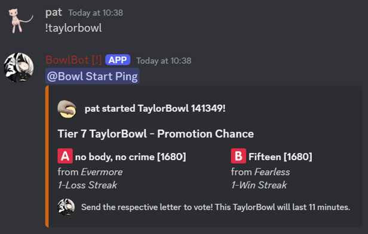
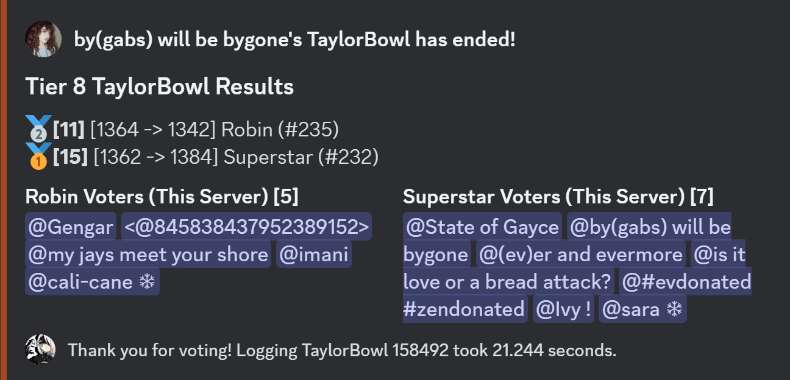

Starting

A natural start of a Tier 7 TaylorBowl.
To start a TaylorBowl, the command !taylorbowl can be used. Using this command successfully is colloquially known as a "natural start". Bowls can be forced or queued for a specific tier or duration using credits. (Main article: Forcing Bowls) If a bowl is queued, a natural start is not possible.
Duration
Each TaylorBowl lasts, by default, 11 minutes. This duration may be adjusted by forcing or queueing a bowl. Between TaylorBowls, there is a 2 minute "cooldown" where no new TaylorBowls can be started. After the cooldown is over, bowls may be started again, or the queue will continue.
Voting
Every TaylorBowl has two song options, chosen from a list of matchups. (Main article: Songs) The song with the higher elo is assigned the letter A, and the song with lower elo is assigned the letter B. Sending either letter as its own message counts as a vote. Alternatively, sending any message containing [A] or [B] counts as a vote for that option, known internally as the Lydia rule. If a message contains both [A] and [B], it is counted as a vote for A.
You may switch votes at any point in a bowl apart from the last minute by simply recasting a vote as if you had not voted prior.
The command !showbowl or its shortened form !sbowl can be used at any point during the bowl to show the two options and the number of votes each currently has. The command /didivote can be used at any point during the bowl to privately show if you have voted, and for which song.
Every TaylorBowl has a "first vote". This is counted as the first chronological vote cast for either option, barring Autovoters. Certain TaylorBowls have a "hammer vote". This is counted as the last vote cast for the winning option when the difference in votes is 1. Neither have additional impact on the bowl, but both contribute to User Score.
You may switch votes at any point in a bowl apart from the last minute by simply recasting a vote as if you had not voted prior.
The command !showbowl or its shortened form !sbowl can be used at any point during the bowl to show the two options and the number of votes each currently has. The command /didivote can be used at any point during the bowl to privately show if you have voted, and for which song.
Every TaylorBowl has a "first vote". This is counted as the first chronological vote cast for either option, barring Autovoters. Certain TaylorBowls have a "hammer vote". This is counted as the last vote cast for the winning option when the difference in votes is 1. Neither have additional impact on the bowl, but both contribute to User Score.
Ending

The summary message of a concluded Tier 8 TaylorBowl.
If at the end of the bowl's duration there is an option with more votes than the other, it is chosen as the winner. BowlBot will then enter a "logging" period, which typically lasts between 15 and 30 seconds. This is counted as part of the bowl cooldown.
At the end of each logging period, BowlBot saves not only data of the bowl that ended, but from other areas including but not limited to Blooms and Blights, changes in Credits, Ephemera, and Perpetua, Autovoting status, and transfers.
At the end of the logging period, BowlBot sends a summary message of the bowl. It includes the two songs, total votes acquired by both, and voters for each side from the server the message is sent in.
At the end of each logging period, BowlBot saves not only data of the bowl that ended, but from other areas including but not limited to Blooms and Blights, changes in Credits, Ephemera, and Perpetua, Autovoting status, and transfers.
At the end of the logging period, BowlBot sends a summary message of the bowl. It includes the two songs, total votes acquired by both, and voters for each side from the server the message is sent in.
Extra Time
If at the end of the bowl's duration the number of votes for each option is tied, the bowl proceeds into Extra Time, which lasts 2 minutes. Switching votes is re-enabled, and Bribing is now possible, though the latter will have no effect unless the Tiebreaker period is started. In the last minute of extra time, switching votes is again disabled.
Tiebreaker
If at the end of Extra Time the number of votes for each option is still tied, the bowl proceeds into a 1 minute Tiebreaker. No new votes may be cast, nor can votes be changed.
Bribing using credits through the command !bribe amount is the only way to change the outcome of the bowl. At the end of the Tiebreaker, the winner is decided based on the number of credits used to bribe.
The probability that a given song X wins against another song Y is given by the formula:
The ratio of the probability that X wins against the probability that Y wins is given by the formula:
If any one song has no credits used to bribe for it, it has a 0% probability of winning. If both songs have no credits used to bribe for them, they both have a 50% probability of winning.
Bribing using credits through the command !bribe amount is the only way to change the outcome of the bowl. At the end of the Tiebreaker, the winner is decided based on the number of credits used to bribe.
The probability that a given song X wins against another song Y is given by the formula:
$$P(X\,wins)=\frac{Credits\,bribed\,for\,X}{Total\,credits\,bribed}$$
$$P(X\,wins):P(Y\,wins)=Credits\,bribed\,for\,X:Credits\,bribed\,for\,Y$$